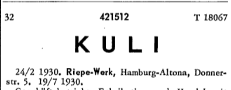
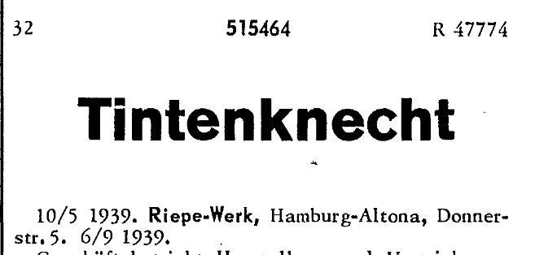
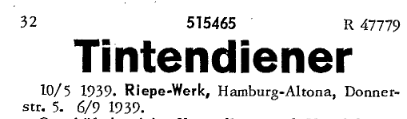
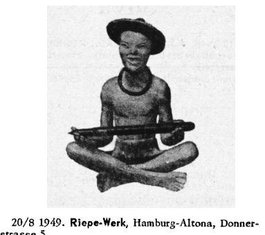

Wieso 'Kuli' für 'Kugelschreiber'?
Rotrings Einfluss auf die Sprache
Stand: 18.05.2026
Heute versteht man unter einem Kuli eine Art Abkürzung für Kugelschreiber. Doch das war nicht immer so.
"Kuli" bezeichneten ursprünglich schlecht bezahlte körperliche Arbeiter (z.B. Lastenträger) aus dem asiatischen Raum um 1900.
Aufbauend darauf wurde der Begriff "Tintenkuli" gebildet, der bereits 1900 abwertend für Lohnschreiber verwendet wurde - lange vor Rotring.
Bezeichnet wurden so Journalisten, welche keinen journalistischen/qualitativen Anspruch aufgrund von Käuflichkeit oder Folgsamkeit besaßen.
Die "Tintenkuli Handels-G.m.b.H." (1928, ab 1936 Riepe-Werk, um die 60er dann Rotring) übernahm diesen Begriff dann 1928 für ihren Firmennamen und auch ihr erstes Produkt. Auch den "Kuli"-Begriff an sich meldete man an.


Das Produkt Tintenkuli war ein sogenannter Stylograph, ein Füller mit Röhrchen statt Feder. Kugeln konnten damals noch nicht genutzt werden.
Man münzte den Tintenkuli-Begriff für einen menschlichen Arbeiter also auf ein Schreibwerkzeug um.
Diese Brücke schlägt auch die Personifizierung des Tintenkulis, welche 1938 eingetragen wurde:


Der Tintenkuli stellt sich vor: Ganz günstig sei er, und 'eine Woche kostenlos zur Probe arbeiten' biete er an.
Wie die menschliche Tintenkuli ist der Tintenkuli Rotrings also günstig, arbeitet unaufhörlich, und schreibt alles, was man will.
Der 1939 eingetragene Tintenknecht und Tintendiener macht den Wortursprung noch klarer.


Und um 1949 bewarb eine menschliche Kuli-Figur Rotrings Produkte:

Parallel wurde die Abkürzung Tiku (1930) und Tikuli (1949) benutzt.
Rotring nutzte den Kuli-Begriff nicht nur für ihren Tintenkuli, sondern auch für:
|
Schreibkuli (1942) ? |
|
Farbstiftkuli (1938), 4-Farb-Kuli (1952), 4-Farb-Tikk-Kuli, ... Mehrfarbbuntstifte- und kugelschreiber. |
Rollkuli. (1949) Tintenschreiber mit Kugelspitze (eine Art Mischung aus Kugelschreiber und Füllfederhalter). |
| Bleikuli. (1949) Automatischer Druckbleistift. |
| Tikk-Kuli (1949) Kugelschreiber mit Druckmechanismus. ('Tikk' soll wohl ein Onomatopoeia sein) |
|
Tusch-Kuli (1954) Tusche-Stift? |
Auch für Gebrauchsgegenstände außerhalb der Schreibgerätewelt versuchte Rotring angeblich zeitweilig den Kuli-Begriff, so soll es zur Zeit des Tintenkuli einen Rasierer 'Rasierkuli' oder eine Zigarettenschatulle 'Takuli' (von Tabak) gegeben haben.
Obwohl von Rotring bzw. den Riepe-Werken nach dem 2. Weltkrieg also jeder Typ Schreibinstrument als Kuli bezeichnet wurde, setzte sich in der Bevölkerung aus Gründen der Sprachökonomie durch die Ähnlichkeit des Wortes zu Kugelschreiber wohl von selbst die Nutzung von "Kuli" als Abkürzung für "Kugelschreiber" durch.
Fazit
Rotring schaffte dem Begriff Kuli durch ihre Produkte mit dem Wortbestandteil Kuli, hauptsächlich dem Tintenkuli, Bekanntheit und etablierte die Verwendung für ein Schreibgerät selbst.Ressourcen zur weiteren Recherche:
Fountainpennetwork: Viel mehr Infos zum Tintenkuli (sehr gute Quelle)
Unofficialrotring: Tikk-Kuli
Unofficialrotring: Blei-Kuli
Meine Liste von Rotring-Mehrfarbstiften
Graphography: Rotring-Mehrfarbstifte
Rotring Museum